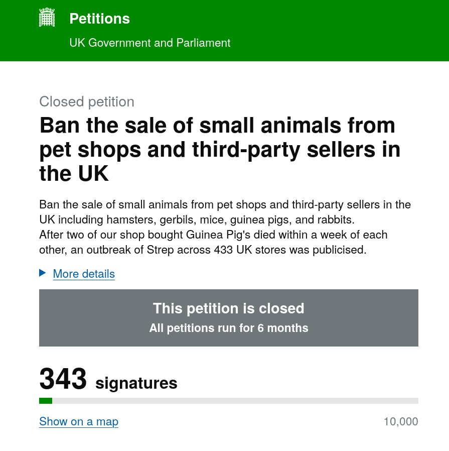

Why This Matters
Small animals like rabbits, hamsters, and guinea pigs are commonly sold through retail channels where follow-up care is limited — and sadly, many are later abandoned or mistreated.
Unlike responsible rescue centres, pet shops and third-party sellers typically don't check to ensure animals are going to safe or suitable homes. There are no home checks, no assessments, and in most cases, they’re simply not set up to do so, just quick transactions. Without home checks or follow-ups, it’s easy for animals to end up in unsuitable environments, even if unintentionally. This gap in responsibility is one of the key reasons we believe small animal sales should be stopped.
We're campaigning to end third-party and pet store sales of live small animals and promote adoption instead. Adopt, Don't Shop..
Take Action NowHow You Can Help and Why Your Support Matters
- Support legislation to ban small pet sales in stores
- Adopt from local rescues or shelters
- Educate others about responsible pet ownership
- Together we can create meaningful change for animal welfare
- Collective action strengthens the petition's impact
Sign the Petition
..the petition has ended now, please help to open a new one if you are British, based on the below..
Help us push lawmakers to act. Support our mission by signing the official petition to stop the sale of small animals in third-party markets and pet shops.

Impact of Success
At 10,000 signatures: The government will formally respond to the petition
At 100,000 signatures: The petition will be considered for debate
Please check and sign the other cases related:
🔗 Stronger penalties for animal cruelty and stricter regulations on animal sales [↗]
🔗 Make it illegal to keep or sell social animals like guinea pigs alone [↗]
Would you please share this page with your "network" and encourage others to sign? Together, we can create better conditions for animals.
The Devastating Reality of Exotic Pet Ownership
Families purchase small mammals believing they're getting cute pets similar to dogs and cats. But in reality these animals are wild, exotic creatures with complex needs that might NOT be met in home environments or owners have no willing to research about them to make at least their feeding and diet right. The consequences are tragic:
- Hamsters and gerbils, natural burrowers, pace endlessly in tiny cages
- Guinea pigs, social herd animals, suffer alone in isolation
- Rabbits, designed to roam miles daily, are confined to small spaces
- Exotic rodents, with specific dietary needs, often receive inadequate nutrition
The Abandonment Crisis
When parents realise these aren't "cute toys" but living beings with complex needs or the child(ren) lost interest in them, hundreds of animals face horrific fates:
- Rescue centres overflow with surrendered animals
- Animals are dumped in public parks and streets
- Some are abandoned in boxes outside shelters
- Many suffer slow deaths from improper care and abandonment
Voices That Matter
“After volunteering at a shelter, I realized how many small pets are surrendered. They deserve better than a cage in a shop window.”
– Lila R., volunteer
“We adopted a guinea pig instead of buying one. He was rescued from a store closure. Adoption changed his life — and ours.”
– Mark & Dana